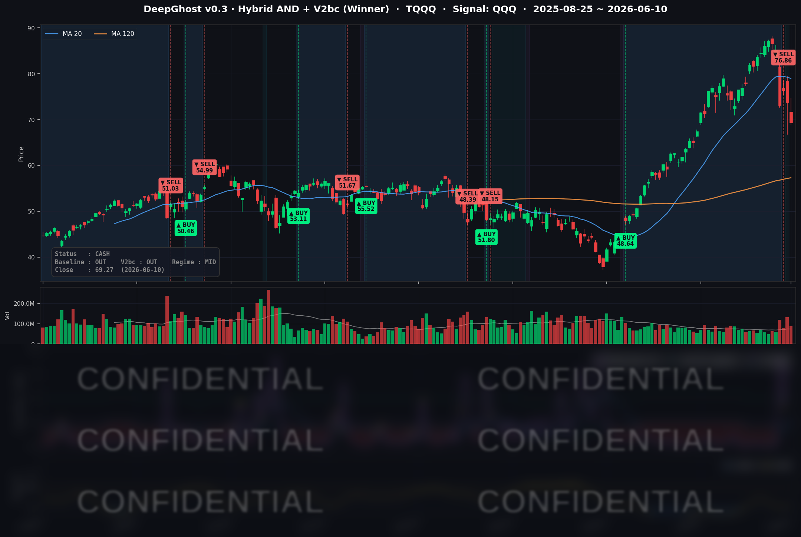

CPI는 예상치와 부합하였으나, 어제 말씀드린대로 이번주 전쟁이 마무리 될 것 같지 않다는 시장의 우려 때문에 전체 시장이 추가 하락을 하였습니다. 인플레이션을 사랑한다는 트럼프의 한마디도 컷습니다.
당분간 물가를 잡기는 불가능할 것 같습니다. 진짜 전쟁이 끝나고 호르무즈 해협이 풀려야 시장이 다시 상승할 것 같습니다.
📊 오늘의 매매 신호
| 항목 | 내용 |
|---|---|
| 오늘 할 일 | ✅ 아무것도 안 해도 됩니다 |
| 포지션 상태 | 💵 현금 보유 중 (OUT OF POSITION) |
| 현금 보유 기간 | 2026-06-08 ~ 2026-06-10 (3일) |
| TQQQ 종가 | $69.27 (-6.04%) |
직전 한 달가량(5월 초~6월 초) 이어가던 TQQQ 매수 포지션은 6월 초 매도 신호에 따라 6/8 전량 청산을 마쳤습니다. 이번 거래의 실현 수익은 회사 기준(v0.2 Baseline) 약 +70% 구간으로, 한 달여를 끌고 온 보람이 있는 마무리였습니다. 청산 직후인 6/8~6/10은 그대로 현금을 들고 관망 중입니다.
TQQQ 시그널 — OUT OF POSITION
현재 상태: 현금 보유 중 | 직전 거래 실현 수익 약 +70% (v0.2 Baseline 기준)

오늘은 타이밍의 가치가 그대로 증명된 하루였습니다. 모델은 6월 초 매도 신호로 6/8에 현금화를 마쳤고, 불과 이틀 뒤인 6/10에 TQQQ가 하루 만에 −6.04% 빠졌습니다. 만약 그날까지 들고 있었다면 한 달여 쌓은 수익의 상당 부분을 그 하루에 되돌려줬을 자리였습니다.
지금의 현금 보유는 "기회를 놓친 관망"이 아니라 "급락을 비켜선 방어"입니다. 그리고 다시 들어갈 신호는 아직 보이지 않습니다. 모델은 시장이 빠졌다고 곧바로 매수하지 않고, 추세 바닥이 확인될 때까지 기다리는 룰을 지킵니다. 현재 신호는 "아직 진입 영역이 아니다"를 가리키고 있어, 떨어진 김에 서둘러 줍는 식의 매수는 하지 않습니다.
재진입 관전 포인트. 모델이 다시 매수 채비를 하려면 하락 추세가 한 차례 더 깊어지며 바닥이 확인되어야 합니다. 가장 먼저 살펴볼 후보는 메모리·반도체 쪽(MU, INTC)이고, 매크로 분수령으로는 6/11 생산자물가(PPI), 6/16~17 FOMC, 그리고 유가 흐름이 변수입니다. 이 이벤트들을 통과하며 시장이 진정될지, 아니면 한 번 더 흔들릴지가 다음 진입 타이밍을 좌우할 전망입니다.
오늘 미국 시장 — 시황 요약
지수 마감
| 지수 | 종가 | 등락률 |
|---|---|---|
| S&P 500 | 7,266.99 | -1.62% |
| Nasdaq Composite | 25,169.50 | -1.98% |
| Dow Jones | 49,918.78 | -1.87% |
| Russell 2000 | 2,835.46 | -1.10% |
4대 지수가 동반 하락했습니다. 기술·성장주 비중이 높을수록 낙폭이 컸고(나스닥 −1.98%), 소형주(러셀 −1.10%)가 상대적으로 선방했습니다. 이번 하락의 진앙이 빅테크·반도체 집중 매도였다는 점을 보여주는 그림입니다. 3배 레버리지 TQQQ는 나스닥(QQQ −2.00%)의 약 3배인 −6.04%로 마감했는데, 모델은 이미 6/8 청산을 마쳐 이 낙폭에 노출되지 않았습니다.
국채 금리 동향
| 만기 | 수익률 | 전일 대비 |
|---|---|---|
| 3개월 | 3.635% | -0.0bp |
| 10년 | 4.542% | +1.4bp |
| 30년 | 5.025% | +1.4bp |
장기물이 소폭 올랐지만 단기물(3개월)은 사실상 제자리였습니다. 3년래 최고 인플레 headline에 비하면 금리 반응은 의외로 얌전했는데, 이는 시장이 이미 6/16~17 FOMC 동결을 거의 확정으로 보고 있어 단기 금리에 새로 반영할 여지가 적었기 때문입니다. 장단기 스프레드(10년−3개월 +90.7bp)는 정상적인 우상향 곡선을 유지해 단기 침체 신호는 아니지만, 30년물이 5% 위에 고착되며 "고금리 장기화" 분위기는 남아 있습니다.
연준 발언 & 금리 패스
6/16~17 FOMC를 앞두고 연준은 사전 침묵기(blackout)에 들어가 있어, 정책 관련 공개 발언은 없었습니다. 발언 공백 속에서 정책 시그널 역할을 한 것은 5월 CPI(+4.2%)였고, 핫한 인플레 headline로 선물시장의 6월 동결 확률은 약 99%로 굳어지며 톤은 명확히 매파 쪽으로 기울었습니다. 관전 포인트는 점도표와 파월 기자회견에서 하반기 인하 횟수 전망이 더 줄어드는지 여부입니다.
오늘의 핵심 이슈
- 5월 CPI +4.2% — 3년 만의 최고 헤드라인 인플레. 에너지가 월간 상승분의 60% 이상을 차지했습니다. 다만 근원물가(코어)는 전년비 +2.9%, 전월비 +0.2%로 비교적 진정돼, 이번 급등의 주범이 유가·에너지였음을 확인시켰습니다.
- 이란 전쟁·호르무즈 봉쇄發 유가 쇼크. WTI가 +4.63% 급등하며 에너지 인플레가 헤드라인을 끌어올리는 구조가 이어졌습니다. 유가 → 인플레 → 고금리 장기화로 연결되는 우려가 위험자산 전반을 눌렀습니다.
- 반도체·대형 성장주 차익실현 연장. 6/4 브로드컴의 보수적인 AI 칩 가이던스로 시작된 칩 섹터 조정이 이날까지 이어졌습니다. 스마트폰 수요 둔화와 메모리 가격 우려가 모바일·메모리 칩(QCOM −6.92%, AVGO −5.12%, MU −4.70%)을 집중 타격했습니다.
변동성 & 투자심리
- VIX: 22.22 (+11.83%) — 하루 만에 두 자릿수 급등하며 20선을 위로 돌파했습니다. 단기 경계감이 확대됐지만 패닉(30 이상) 영역은 아닙니다.
- 공포·탐욕 지수: 29 (공포) — 직전 탐욕 구간에서 공포로 빠르게 전환됐습니다. 다만 자본투항(capitulation) 수준의 투매는 아니며, "인플레·유가 + 고밸류 차익실현" 성격의 조정으로 보입니다.
매크로 & 원자재
- WTI $92.28 (+4.63%) · Brent $95.14 (+4.03%) — 호르무즈發 공급 차질로 에너지 강세 지속.
- 금(Gold) $4,076.0 (-4.32%) — 핫한 CPI로 실질금리 상승 기대와 차익실현이 겹치며 급락. 에너지 강세와 금 약세의 디커플링이 이날의 특징이었습니다.
주요 종목 동향
| 종목 | 종가 | 등락률 | 비고 |
|---|---|---|---|
| AAPL | 291.58 | +0.35% | 하락장 방어, 반도체 직접 노출 작아 상대적 안전판 |
| NVDA | 200.42 | -3.73% | AI 칩 차익실현 연장, $200 지지선 테스트 |
| MSFT | 397.36 | -1.50% | 메가캡 중 낙폭 제한적, $400 하회 |
| GOOGL | 356.38 | -2.16% | 성장주 동반 조정 |
| META | 570.98 | -2.33% | 성장주 동반 조정 |
| AMZN | 238.00 | -2.53% | 소비·유가 부담 겹쳐 약세 |
| TSLA | 381.59 | -3.80% | 고베타 성장주, 위험회피에 민감 |
| NFLX | 82.00 | +0.72% | 콘텐츠 방어주 성격, 플러스 마감 |
| AVGO | 372.10 | -5.12% | 보수적 AI 가이던스發 조정 지속 |
| QCOM | 191.20 | -6.92% | 커버리지 최대 낙폭, 스마트폰 수요·규제 리스크 복합 |
| INTC | 107.04 | -0.82% | 낙폭은 제한적 |
| MU | 891.88 | -4.70% | 메모리 가격 변동성 + 칩 섹터 매도 |
이날 매도가 "시스템 리스크"가 아니라 고밸류 AI·반도체에서 방어주로 자금이 갈아탄 로테이션이었음을, 플러스 마감한 AAPL·NFLX가 종목 레벨에서 보여줍니다.
Ghost.AI — Quantitative AI Investment
Model: DeepGhost v0.3 | Transformer-Based Deep Learning
Coverage: 13 tickers | Updated every trading day after US market close
⚠️ 본 자료는 정보 제공 목적으로만 작성되었으며 투자 권유가 아닙니다. 모든 투자의 책임은 투자자 본인에게 있습니다. 과거 성과가 미래 수익을 보장하지 않습니다.
[유의사항]
고스트에이아이 주식회사는 「자본시장과 금융투자업에 관한 법률」 제101조에 따른 유사투자자문업자로 등록된 사업자입니다.
- 본 서비스는 불특정 다수를 대상으로 발행되는 단방향 정보 제공 서비스이며, 투자자 개인의 재산 상황·투자 목적·위험 선호도를 반영한 개별 투자 조언이 아닙니다.
- 고스트에이아이 주식회사는 고객과 쌍방향 의사소통(개별 상담, 맞춤형 자문 등)을 제공하지 않습니다.
- 본 콘텐츠는 투자 권유 또는 매매 주문의 청약·청약의 권유에 해당하지 않으며, 최종 투자 판단 및 그에 따른 손익의 책임은 전적으로 투자자 본인에게 있습니다.
고스트에이아이 주식회사 | 유사투자자문업 등록번호: 제2025-000호